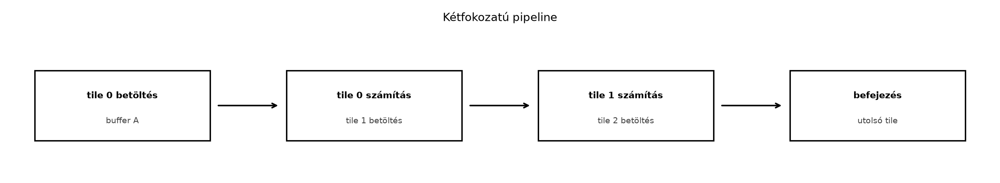

A dupla pufferelés és a pipeline nem csupán egy újabb optimalizálási
trükk, hanem a GPU-programozás egyik központi gondolata: a memória és a
számítás valójában két, egymástól részben független erőforrás, amelyeket
akkor használunk ki jól, ha egyszerre dolgoztatjuk őket. A 14.2
alfejezetben megismert cp.async lehetővé tette, hogy a
globális memóriából a shared memoryba irányuló másolást anélkül indítsuk
el, hogy a szálnak várnia kellene a befejezésre. Ebben az alfejezetben
ezt az aszinkron másolást többszintű csővezetékké szervezzük, és
megnézzük, hogyan lehet a másolási késleltetést a számítás mögé
rejteni.

A GPU végrehajtási modelljében a memóriaműveletek és az aritmetikai utasítások más-más hardveregységeken futnak. A globális memóriából a shared memoryba irányuló másolás tipikusan több száz órajelciklusig is eltart, miközben az SM számítási egységei eközben üresen járhatnak, ha a kernel szinkron módon vár. Ez a latencia-elrejtés alapkérdése: nem a memória műveletet kell gyorsabbá tenni önmagában, hanem a várakozási időt hasznos számítással kell kitölteni.
A hagyományos, szinkron tilingnél a blokk életciklusa ismétlődő szakaszokból áll:
__syncthreads() biztosítja, hogy a teljes csempe
rendelkezésre álljon,__syncthreads() biztosítja, hogy a shared memory már
nem kell, mielőtt a következő csempe felülírná.Ebben a menetrendben a másolás és a számítás soha nem fut egy időben. A második lépés alatt az SM számítási egységei többnyire tétlenek, míg a negyedik lépés alatt a memória-útvonalak nem dolgoznak. A pipeline célja az, hogy a következő csempe másolása már akkor folyamatban legyen, amikor az aktuális csempe feldolgozása még tart.
A dupla pufferelés ennek a legegyszerűbb megvalósítása. Két shared memory puffert tartunk fenn; amíg az egyikből számolunk, a másikba töltjük a következő adagot. A csere nem adatot mozgat, hanem csak a pufferszerepeket cseréli fel. A megfelelő szinkronizációval elérhető, hogy a másolási késleltetés egy része vagy egésze a számítási idő alá kerüljön.
A „stage” kifejezés a pipeline egy szakaszát jelöli. A legegyszerűbb esetben két szakasz van:
A két szakasz között egy szinkronizációs pont, azaz barrier biztosítja, hogy a consumer csak akkor kezdje el a puffert olvasni, ha a producer már befejezte a feltöltését, és hogy a producer ne írja felül a puffert addig, amíg a consumer még olvassa.
A pipeline mélysége azt mondja meg, hogy hány csempe feldolgozása lehet egyszerre folyamatban a különböző fázisokban. A kétfokozatú pipeline két puffert használ, és egyszerre legfeljebb két csempe van jelen: az egyik már betöltve, a másik éppen töltődik vagy feldolgozás alatt áll. A háromfokozatú pipeline három puffert használ, és így tovább.
Fontos megkülönböztetni a pufferek számát a pipeline tényleges mélységétől. A kétpufferes séma általában egy csempe számítását és a következő csempe másolását fedi át, ezért két szakasz mélységű. A hárompufferes sémában a másolási, az esetleges előkészítő és a számítási fázisok jobban szétválaszthatók.
A barrier itt nemcsak a __syncthreads() hívást jelenti,
hanem a csővezeték szakaszainak találkozási pontját is. A CUDA aszinkron
másolási modelljében kétféle várakozásra van szükség:
cp.async
csoportokhoz tartozó wait_group (C++-ban
__pipeline_wait_prior) a másolás hardveres állapotát
figyeli. Ez nem blokkolja a teljes blokkot, csak az adott szálat, és nem
garantálja a shared memory láthatóságát a többi szál számára.__syncthreads() a blokk összes szálát egy pontra hozza, és
memória-akadályt is jelent. Erre azért van szükség, mert a másolást több
szál együtt végzi (mindegyik a csempe egy-egy 16 bájtos darabját), és a
consumer szakasz csak akkor olvashat, ha minden producer szál
végzett.A helyes minta tehát az, hogy a másolás befejezésére várunk, majd
__syncthreads()-et hívunk, és csak utána engedjük a
fogyasztói fázist a pufferhez. Ha a sorrend megfordul, versenyhelyzet
keletkezik: a szál elérheti a __syncthreads()-et, mielőtt a
saját másolási csoportja befejeződött volna, és így a többi szál olyan
memóriát olvashat, amelyet még nem írt fel mindenki.
A gyakorlatban a CUDA C++ a következő hívásokat biztosítja a
<cuda_pipeline.h> fejlécben:
__pipeline_memcpy_async(dst_smem, src_gmem, bytes)
elindít egy aszinkron másolást,__pipeline_commit() a megelőző másolásokat egy
csoportba zárja,__pipeline_wait_prior(n) várakoztatja a hívó szálat,
amíg a folyamatban lévő csoportok közül a legutóbbi n
kivételével mindegyik be nem fejeződik.A wait_prior finomabb vezérlést ad, mint az egyszerű
wait_group 0. Az n paraméter azt szabályozza,
hogy hány befejezetlen másoláscsoport maradhat még folyamatban. Ez a
többszintű pipeline kulcsa: ahelyett, hogy megvárnánk az összes
másolást, csak a legkorábbi csoportokat várjuk meg, így a későbbi
csoportok még közben tölthetik a saját puffereiket. A
__pipeline_wait_prior(0) megvárja az összes elkötelezett
csoportot. Fontos: a __pipeline_memcpy_async szál-szintű
hívás, amely egyszerre csak 4, 8 vagy 16 bájtot másol; egy teljes
csempét ezért a blokk szálai osztják fel egymás között (például
szálanként egy-egy float4, ciklusban).
Alacsonyabb szinten a PTX utasítások a következők:
cp.async.ca.shared.global [dst], [src], 16;cp.async.commit_group;cp.async.wait_group 0;A PTX-szintű kiírás akkor hasznos, ha valaki saját absztrakciót épít, vagy ha a CUDA C++ burkoló hívás viselkedését akarja pontosan ellenőrizni. Ebben a könyvben a hordozható CUDA C++ réteget részesítjük előnyben, de a PTX-formát is bemutatjuk, hogy a mögöttes hardveres viselkedés ne maradjon homályban.
Tekintsünk egy egyszerű, mégis jól mérhető feladatot: egy blokk egy nagy, egydimenziós bemeneti tömb egymást követő csempéit dolgozza fel, és minden csempére egy állítható költségű transzformációt alkalmaz. A transzformáció legyen elég egyszerű ahhoz, hogy a kódot könnyen ellenőrizhessük, de legyen benne egy mesterséges számítási ciklus, amellyel a memória és a számítás arányát hangolni tudjuk.
A csempéket a blokkok grid-stride módon osztják szét: a blokk
t-edik csempéje a blockIdx.x + t * gridDim.x
indexű, így minden csempét pontosan egy blokk dolgoz fel. A kernel
sablonparamétere a pufferek (stage-ek) száma; a STAGES = 2
a kétfokozatú, a STAGES = 3 a háromfokozatú eset:
// CUDA C++17 (nem futtatott kód; a launch paramétereket és az sm_80+ viselkedést a laborban
// ellenőrizni kell)
#include <cuda_pipeline.h>
constexpr int kTile = 2048; // float/csempe (8 KiB); 3 stage esetén 24 KiB statikus shared
constexpr int kThreads = 256;
// Egy csempe aszinkron másolása: a szálak 16 B-os (float4) darabokat osztanak fel.
// Feltétel: n % 4 == 0, a bemenet 16 B-ra igazított (cudaMalloc és a kTile*4 B eltolás ezt
// teljesíti).
__device__ __forceinline__ void issue_tile(float* dst, const float* in, int n, int tile) {
long long base = (long long)tile * kTile;
int valid = (int)min((long long)kTile, (long long)n - base);
for (int i = threadIdx.x * 4; i < valid; i += blockDim.x * 4)
__pipeline_memcpy_async(dst + i, in + base + i, 16);
}
template <int STAGES>
__global__ void pipelined_transform(const float* __restrict__ input,
float* __restrict__ output,
int n, int work_per_element)
{
static_assert(STAGES >= 2, "legalább két puffer kell");
__shared__ __align__(16) float buf[STAGES][kTile];
const int total_tiles = (n + kTile - 1) / kTile;
if (blockIdx.x >= total_tiles) return; // blokkszinten egységes, barrier előtt
const int my_tiles = (total_tiles - blockIdx.x + gridDim.x - 1) / gridDim.x;
// Előtöltés: az első STAGES-1 csempe másolása; minden csoportot lezárunk
// (üres csoport is), hogy a csoportszámlálás egységes maradjon.
for (int p = 0; p < STAGES - 1; ++p) {
if (p < my_tiles) issue_tile(buf[p], input, n, blockIdx.x + p * gridDim.x);
__pipeline_commit();
}
for (int t = 0; t < my_tiles; ++t) {
// 1. A t. csempe csoportja kész (legfeljebb STAGES-2 újabb csoport maradhat
// folyamatban).
__pipeline_wait_prior(STAGES - 2);
// 2. Minden szál másolata kész és látható; egyben mindenki végzett a t-1. csempével,
// így a (t-1)%STAGES puffer újra írható.
__syncthreads();
// 3. A t+STAGES-1. csempe másolásának indítása a felszabadult pufferbe: ez fut
// a t. csempe feldolgozásával egy időben.
int nt = t + STAGES - 1;
if (nt < my_tiles) issue_tile(buf[nt % STAGES], input, n, blockIdx.x + nt * gridDim.x);
__pipeline_commit();
// 4. A t. csempe feldolgozása.
long long base = (long long)(blockIdx.x + t * gridDim.x) * kTile;
int valid = (int)min((long long)kTile, (long long)n - base);
for (int i = threadIdx.x; i < valid; i += blockDim.x) {
float val = buf[t % STAGES][i];
for (int w = 0; w < work_per_element; ++w) val = fmaf(0.999f, val, 0.001f);
output[base + i] = val;
}
// 5. Ebben a sorrendben ez a barrier redundáns (a következő iteráció eleji barrier
// már biztosítja, hogy mindenki végzett); megtartjuk, mert kötelező lenne, ha a
// másolást a wait ELŐTT indítanánk (mint a 14.4 transzponáló kernelében).
__syncthreads();
}
}A kód működése STAGES = 2 esetén: az előtöltés a 0.
csempét indítja; az iteráció elején a wait_prior(0)
megvárja a t. csempét (ekkor a t+1. még nincs elindítva), a barrier után
indul a t+1. csempe másolása a másik pufferbe, és ugyanekkor a szálak a
t. csempét dolgozzák fel. A másolás és a számítás tehát valóban átfed. A
barrierek szerepe: az első a másolások láthatóságát és – mivel a
következő másolás csak utána indul – az előző puffer felszabadulását is
biztosítja. Az iteráció végi második barrier ebben a sorrendben
elhagyható; akkor kötelező, ha a következő csempe másolását a wait ELŐTT
indítjuk (így tesz a 14.4 transzponáló kernele).
A wait_prior argumentuma levezetve: az iteráció elején
STAGES - 1 + t csoport van lezárva, a t. csempe a t.
csoport, ezért az utolsó STAGES - 2 csoportot hagyhatjuk
folyamatban. A __pipeline_wait_prior és a
__syncthreads sorrendje kritikus: a wait csak a hívó szál
saját másolataira vonatkozik, ezért a barrier előtt kell lennie, hogy a
barrier után minden szál másolata kész legyen. A kód nem ad hibát a
csonka utolsó csempére sem: a valid mérettel csak az
érvényes, 4-gyel osztható darabokat másoljuk, ezért az
n % 4 == 0 feltétel kötelező.
A kétpufferes változat a szinkron változathoz képest akkor hoz jelentős gyorsulást, ha a másolási idő és a számítási idő összemérhető. Ha a számítási idő nagyon kicsi, a pipeline nem sokat segít, mert a blokk akkor is a memóriára vár. Ha a számítási idő nagyon nagy, a másolási idő eltörpül, és a pipeline szintén nem látszik jelentősnek. Az optimális tartomány az, amikor a másolás és a számítás időigénye hasonló nagyságrendű.
A kétpufferes pipeline egyszerre egy csempe másolását és egy csempe feldolgozását engedi. A hárompufferes pipeline tovább mélyíti az átfedést: miközben az egyik csempét feldolgozzuk, a következő már töltődik, a harmadik puffer pedig már fogadhatja az azt követő másolási kérelmet, vagy éppen előkészítés alatt áll.
A mélyebb pipeline előnye, hogy a memória-alrendszer hosszabb ideig
telítve marad. A cp.async másolások indítása nem blokkoló,
ezért a szál gyorsan több másolási csoportot is elkötelezhet. A
hardveres várakozási mechanizmusok pontosan ezt a több befejezetlen
csoportot kezelik. A wait_prior(n) paramétere így a
pipeline mélységét szabályozza: ha az iteráció elején a feldolgozandó
csempe csoportja után még D újabb csoportnak szabad
folyamatban lennie, akkor wait_prior(D)-t hívunk. A fenti
kernelben ez D = STAGES - 2, mert a legfrissebb csoportnak
még futnia kell.
A háromfokozatú változat ugyanaz a sablon STAGES = 3
értékkel: az előtöltés két csempét indít, és az iterációnként
folyamatban hagyható csoportok száma STAGES - 2 = 1, vagyis
a t+1. csempe másolása még fut, amikor a t. csempét feldolgozzuk. A
puffer-újrahasznosítás biztonságát itt is az iteráció eleji barrier
adja: az új másolás a (t-1) % STAGES pufferbe indul,
amelyet az előző iteráció feldolgozása már befejezett (mindenki átlépte
a barriert). A hiba, amelyet el kell kerülni, ha a másolást a barrier
előtt indítjuk, és az iteráció végi barrier hiányzik: a
gyorsabb szálak felülírhatják azt a puffert, amelyet a lassabbak még
olvasnak.
A mélység növelése nem korlátlanul kifizetődő. Minden újabb puffer shared memoryt foglal, és minden újabb szint szinkronizációs költséget, valamint regiszternyomást is jelenthet. A túl mély pipeline emellett csökkentheti az occupancy-t, mert a megnövekedett shared memoryigény miatt kevesebb blokk fér el egy SM-en. A legtöbb gyakorlati kernelben a 2–4 szint a jellemző; a nagyobb mélység csak akkor indokolt, ha a másolási késleltetés nagyon nagy, vagy ha a számítási fázis rövid, de sűrűn ismétlődik.
A pipeline akkor működik jól, ha a fogyasztói fázis időtartama
nagyobb vagy egyenlő a producer fázis időtartamánál. Ha a számítási idő
T_c, a másolási idő T_m, és a szinkronizációs
overhead T_s, akkor a kétpufferes változat egy csempére eső
ideje közelítőleg:
T_pipe ≈ max(T_c, T_m) + T_s
A szinkron verzióban viszont:
T_sync ≈ T_c + T_m + T_s
Ez az idealizált modell azt mutatja, hogy a pipeline a két idő közül
a nagyobbikra csökkenti a feldolgozási időt. Ha T_c és
T_m egyenlő, a gyorsulás közel kétszeres. Ha az egyik
sokkal nagyobb a másiknál, a gyorsulás elhanyagolható, mert a
max értékét a nagyobb idő határozza meg.
A valóságban a T_m és a T_c nem mindig
független. A memória-sávszélességen több blokk osztozik, és a számítási
egységek is versenyeznek a regiszterekért, a shared memoryért és a
kibocsátási sávszélességért. Ezért a fenti formula inkább gondolati
keret, mint pontos előrejelzés.
A dupla pufferelés különösen akkor hatékony, ha a másolás időben
elnyúlik, és közben a számítás nem szorul ugyanarra az erőforrásra. A
cp.async utasítások a globális memória és a shared memory
közötti útvonalat használják, míg az aritmetikai utasítások a
regiszterfájlhoz és a végrehajtó egységekhez kötődnek. Ezért a két
tevékenység nagyobb valószínűséggel futhat párhuzamosan.
Az alábbi hibák a leggyakrabban fordulnak elő a double buffering és pipeline implementációkban:
A puffer felülírása a fogyasztás befejezése
előtt.
Ha a másolást a wait/barrier előtt indítjuk (a 14.4 mintája), és az
iteráció végi __syncthreads() hiányzik, a gyors szálak
elkezdhetik a következő csempe másolását abba a pufferbe, amelyet a
lassú szálak még olvasnak. A tünet nem determinisztikus: időnként helyes
eredmény, időnként eltérés, és a hiba a mérési körülményektől függően
eltűnhet vagy előjöhet. A megoldás az, hogy a puffer újrahasznosítása
előtt mindig barrier áll: a bemutatott sorrendben az iteráció eleji, a
másolás-előbb sorrendben az iteráció végi
__syncthreads().
A wait_prior és a
__syncthreads() sorrendjének felcserélése.
A __syncthreads() nem várja meg a folyamatban lévő
aszinkron másolásokat. Ha valaki __syncthreads()-et hív a
wait_prior elé, a blokk szálai átléphetnek a fogyasztói
fázisba, miközben a saját másolási csoportjuk még nem fejeződött be. Ez
versenyhelyzet, ezért a wait_prior-t mindig a
__syncthreads() elé kell tenni.
Rossz wait_prior érték
használata.
A wait_prior(0) minden befejezetlen csoportot bevár; ha ezt
azután hívjuk, hogy a következő csempe másolását már elindítottuk, az
átfedés elvész. A túl nagy érték viszont megengedi, hogy a fogyasztó a
még befejezetlen puffert olvassa. Az értéket a tényleges pipeline
mélységhez kell igazítani, és az éles kódban érdemes fordítási idejű
konstansként vagy jól dokumentált futtatási paraméterként
kezelni.
Az első csempe másolásának elhagyása a ciklus
előtt.
Ha a pipeline az első iterációban nem talál betöltött csempét, a
fogyasztó szakasz az inicializálatlan shared memoryból olvas. Ez gyakran
NaN-ekben vagy nagy számértékekben jelentkezik, különösen FP32 esetén. A
helyes minta az, hogy a belépés előtt legalább az első csempét
elindítjuk.
A határok és az üres csempék kezelésének
hibája.
A my_tiles, az nt < my_tiles feltétel és az
előtöltés logikája gyakran hibás, ha a tömb mérete nem osztható a
csempemérettel. A kernelnek pontosan kell kezelnie a hiányos utolsó
csempét, és az írást globális indexellenőrzéssel kell védenie. A
laborban érdemes többféle n értékkel futtatni, beleértve a
kTile - 4, kTile, kTile + 4 és
STAGES * kTile ± 4 méreteket is (az n 4-gyel
osztható marad).
A túlzott mélység miatti
occupancy-csökkenés.
A mélyebb pipeline nagyobb shared memóriát foglal, ezért kevesebb blokk
fér el SM-en. Ha a fogyasztói szakasz amúgy is sok szálat és regisztert
használ, a mélység növelése akár lassulást is okozhat. A mérési naplóban
ezért érdemes az occupancy, a shared memory és a regiszterhasználat
értékeit is rögzíteni.
A labor célja, hogy a fenti mintát saját környezetben, ellenőrzött
módon mérje. A teljes forrás három kernelt tartalmaz: egy szinkron
baseline-t, valamint a fent bemutatott
pipelined_transform<2> és
pipelined_transform<3> példányt, CUDA event alapú
időméréssel és CPU-referenciával. A programot a könyv írásakor nem
fordítottuk és nem futtattuk. A kód nem tartalmaz valós hitelesítő
adatot, és a futtatáshoz csak saját vagy engedélyezett GPU
használható.
// pipeline_lab.cu (CUDA C++17; nem futtatott kód)
// Fordítás: nvcc -std=c++17 -O3 -arch=sm_<CC> -o pipeline_lab pipeline_lab.cu (CC >= 80)
// Futtatás: timeout 300 ./pipeline_lab
#include <cuda_runtime.h>
#include <cuda_pipeline.h>
#include <cstdio>
#include <cstdlib>
#include <cmath>
#include <vector>
#include <algorithm>
#define CUDA_CHECK(call) \
do { \
cudaError_t err_ = (call); \
if (err_ != cudaSuccess) { \
std::fprintf(stderr, "CUDA hiba %s:%d: %s\n", __FILE__, __LINE__, \
cudaGetErrorString(err_)); \
std::exit(EXIT_FAILURE); \
} \
} while (0)
constexpr int kTile = 2048;
constexpr int kThreads = 256;
__device__ __forceinline__ void issue_tile(float* dst, const float* in, int n, int tile) {
long long base = (long long)tile * kTile;
int valid = (int)min((long long)kTile, (long long)n - base);
for (int i = threadIdx.x * 4; i < valid; i += blockDim.x * 4)
__pipeline_memcpy_async(dst + i, in + base + i, 16);
}
// Baseline: szinkron betöltés (global -> regiszter -> shared), grid-stride csempék
__global__ void sync_transform(const float* __restrict__ input, float* __restrict__ output,
int n, int work_per_element) {
__shared__ float buf[kTile];
const int total_tiles = (n + kTile - 1) / kTile;
for (int tile = blockIdx.x; tile < total_tiles; tile += gridDim.x) {
long long base = (long long)tile * kTile;
int valid = (int)min((long long)kTile, (long long)n - base);
for (int i = threadIdx.x; i < valid; i += blockDim.x) buf[i] = input[base + i];
__syncthreads();
for (int i = threadIdx.x; i < valid; i += blockDim.x) {
float val = buf[i];
for (int w = 0; w < work_per_element; ++w) val = fmaf(0.999f, val, 0.001f);
output[base + i] = val;
}
__syncthreads();
}
}
// Pipeline kernel: megegyezik a fenti szakaszban bemutatott sablonnal (STAGES = 2 és 3
// példány).
template <int STAGES>
__global__ void pipelined_transform(const float* __restrict__ input,
float* __restrict__ output,
int n, int work_per_element) {
static_assert(STAGES >= 2, "legalább két puffer kell");
__shared__ __align__(16) float buf[STAGES][kTile];
const int total_tiles = (n + kTile - 1) / kTile;
if (blockIdx.x >= total_tiles) return;
const int my_tiles = (total_tiles - blockIdx.x + gridDim.x - 1) / gridDim.x;
for (int p = 0; p < STAGES - 1; ++p) {
if (p < my_tiles) issue_tile(buf[p], input, n, blockIdx.x + p * gridDim.x);
__pipeline_commit();
}
for (int t = 0; t < my_tiles; ++t) {
__pipeline_wait_prior(STAGES - 2);
__syncthreads();
int nt = t + STAGES - 1;
if (nt < my_tiles) issue_tile(buf[nt % STAGES], input, n, blockIdx.x + nt * gridDim.x);
__pipeline_commit();
long long base = (long long)(blockIdx.x + t * gridDim.x) * kTile;
int valid = (int)min((long long)kTile, (long long)n - base);
for (int i = threadIdx.x; i < valid; i += blockDim.x) {
float val = buf[t % STAGES][i];
for (int w = 0; w < work_per_element; ++w) val = fmaf(0.999f, val, 0.001f);
output[base + i] = val;
}
__syncthreads();
}
}
using KernelFn = void (*)(const float*, float*, int, int);
struct Case { const char* name; KernelFn fn; };
float run_once(KernelFn fn, int grid, const float* d_in, float* d_out, int n, int w) {
fn<<<grid, kThreads>>>(d_in, d_out, n, w);
CUDA_CHECK(cudaGetLastError());
return 0.0f;
}
bool validate(const Case& c, const std::vector<float>& h_in, const float* d_in, float* d_out,
int n, int w, int grid) {
// NaN: a ki nem írt elem hibát ad
CUDA_CHECK(cudaMemset(d_out, 0xFF, (size_t)n * sizeof(float)));
run_once(c.fn, grid, d_in, d_out, n, w);
CUDA_CHECK(cudaDeviceSynchronize());
std::vector<float> h_out(n);
CUDA_CHECK(cudaMemcpy(h_out.data(), d_out, (size_t)n * sizeof(float),
cudaMemcpyDeviceToHost));
for (int i = 0; i < n; ++i) {
float ref = h_in[i];
for (int k = 0; k < w; ++k) ref = std::fmaf(0.999f, ref, 0.001f);
if (!(std::fabs(h_out[i] - ref) <= 1e-6f * std::max(1.0f, std::fabs(ref)))) {
std::fprintf(stderr, "HIBA: %s n=%d i=%d: %g != %g\n", c.name, n, i, h_out[i],
ref);
return false;
}
}
return true;
}
int main() {
int dev = 0;
CUDA_CHECK(cudaGetDevice(&dev));
cudaDeviceProp prop{};
CUDA_CHECK(cudaGetDeviceProperties(&prop, dev));
std::printf("GPU: %s, cc %d.%d, SM: %d\n", prop.name, prop.major, prop.minor,
prop.multiProcessorCount);
const Case cases[] = {{"sync", sync_transform},
{"2-stage", pipelined_transform<2>},
{"3-stage", pipelined_transform<3>}};
// 1. Helyesség: határesetek (n % 4 == 0), kis rács, hogy a blokkok több csempét is
// kapjanak
const int sizes[] = {4, kTile - 4, kTile, kTile + 4, 3 * kTile - 4, 3 * kTile,
3 * kTile + 4, 7 * kTile + 8};
const int max_n = 1 << 23; // 32 MiB float
float *d_in, *d_out;
CUDA_CHECK(cudaMalloc(&d_in, (size_t)max_n * sizeof(float)));
CUDA_CHECK(cudaMalloc(&d_out, (size_t)max_n * sizeof(float)));
std::vector<float> h_in(max_n);
for (int i = 0; i < max_n; ++i) h_in[i] = (float)(i % 1000) * 0.001f;
CUDA_CHECK(cudaMemcpy(d_in, h_in.data(), (size_t)max_n * sizeof(float),
cudaMemcpyHostToDevice));
for (int n : sizes)
for (const Case& c : cases)
if (!validate(c, h_in, d_in, d_out, n, 4, 3)) return EXIT_FAILURE;
std::printf("Helyesség: OK (%zu méret x %zu kernel)\n", sizeof(sizes) / sizeof(int),
sizeof(cases) / sizeof(Case));
// 2. Mérés: n = 2^23, work_per_element = 1, 16, 64, 256, 1024; warm-up 10, mérés 20
const int n = max_n;
const int grid = std::min((n + kTile - 1) / kTile, 4 * prop.multiProcessorCount);
for (int w : {1, 16, 64, 256, 1024}) {
for (const Case& c : cases) {
cudaEvent_t a, b;
CUDA_CHECK(cudaEventCreate(&a));
CUDA_CHECK(cudaEventCreate(&b));
for (int i = 0; i < 10; ++i) run_once(c.fn, grid, d_in, d_out, n, w);
CUDA_CHECK(cudaDeviceSynchronize());
constexpr int kReps = 20;
double t[kReps], mean = 0.0, var = 0.0;
for (int i = 0; i < kReps; ++i) {
CUDA_CHECK(cudaEventRecord(a));
run_once(c.fn, grid, d_in, d_out, n, w);
CUDA_CHECK(cudaEventRecord(b));
CUDA_CHECK(cudaEventSynchronize(b));
float ms = 0.0f;
CUDA_CHECK(cudaEventElapsedTime(&ms, a, b));
t[i] = ms;
mean += ms;
}
mean /= kReps;
for (double x : t) var += (x - mean) * (x - mean);
std::vector<double> sorted(t, t + kReps);
std::sort(sorted.begin(), sorted.end());
double med = 0.5 * (sorted[kReps / 2 - 1] + sorted[kReps / 2]);
std::printf("work=%4d %-8s median=%.4f ms mean=%.4f ms std=%.4f ms "
"BW(median)=%.1f GB/s\n", w, c.name, med, mean,
std::sqrt(var / (kReps - 1)),
2.0 * n * sizeof(float) / (med * 1e-3) / 1e9);
CUDA_CHECK(cudaEventDestroy(a));
CUDA_CHECK(cudaEventDestroy(b));
}
}
CUDA_CHECK(cudaFree(d_in));
CUDA_CHECK(cudaFree(d_out));
return 0;
}A mintakód a pipelined_transform kernelt is tartalmazza,
hogy a fájl önállóan fordítható legyen; a helyességi tesztet
(validate) a mérés előtt a program lefuttatja, a hibás
kernel a mérés előtt leállítja a programot. A hozzáférés-ellenőrzéshez
érdemes a compute-sanitizer --tool racecheck és
--tool memcheck futtatása is a kis (n = 4 … 7·kTile+8)
méretekre.
A laborhoz CUDA 12.x toolkit és Compute Capability 8.0 vagy újabb GPU
szükséges (sm_80 alatt a cuda_pipeline.h primitívek
szinkron másolásra esnek vissza, így az átfedés nem mérhető). A
fordítási parancs:
# pl. sm_80 (A100), sm_89 (RTX 4070)
nvcc -std=c++17 -O3 -arch=sm_<CC> pipeline_lab.cu -o pipeline_labA futtatás előtt a GPU-t ellenőrizni kell:
nvidia-smi --query-gpu=name,driver_version,power.limit --format=csvA program 10 bemelegítő iterációt, majd 20 mért ismétlést futtat, és
a medián mellett az átlagot és a szórást is kiírja. A hibás vagy túl
hosszú kernel futtatásához timeout-ot
(timeout 300 ./pipeline_lab) és izolált környezetet kell
biztosítani.
Az alábbi napló kitöltendő sablon: a környezeti paramétereket a futtatáskor kell beírni.
| Paraméter | Érték |
|---|---|
| GPU | <kitöltendő> |
| Compute capability | <kitöltendő> |
| CUDA | <nvcc --version> |
| Driver | <nvidia-smi> |
| OS | <kitöltendő> |
| Power limit | <nvidia-smi> |
| ECC / MIG | <kitöltendő> |
| n | 2^23 float (32 MiB) |
| kTile | 2048 float |
| kThreads | 256 |
| work_per_element | 1, 16, 64, 256, 1024 |
| Ismétlések / warm-up | 20 / 10 |
Várt (modellből számolt) alsó korlát: a kernel 32 MiB-ot olvas és ugyanennyit ír, azaz 64 MiB forgalmat mozgat, így a futásidő legalább ; például ~504 GB/s adatlapi sávszélességnél ms. Ennél gyorsabb mért idő mérési hibára utal.
Mért eredmények (kitöltendő; nem futtattuk):
| work_per_element | Sync (ms, medián ± szórás) | 2-stage (ms, medián ± szórás) | 3-stage (ms, medián ± szórás) | Effektív sávszélesség (GB/s) sync / 2 / 3 |
|---|---|---|---|---|
| 1 | <mért> | <mért> | <mért> | <számolt> |
| 16 | <mért> | <mért> | <mért> | <számolt> |
| 64 | <mért> | <mért> | <mért> | <számolt> |
| 256 | <mért> | <mért> | <mért> | <számolt> |
| 1024 | <mért> | <mért> | <mért> | <számolt> |
A várt trend (nem mért): az aritmetikai intenzitás FLOP/bájt (elemenként 8 B forgalom és FLOP). A ridge point alatt (pl. A100-on , az adatlapból levezetett becslés, ellenőrzendő) a kernel DRAM-korlátos, a pipeline hatása kicsi vagy nincs; a ridge point környékén () a legnagyobb; jóval felette a futásidőt a számítás határozza meg, így a pipeline kevésbé látszik. A ridge pointot a saját GPU adatlapjából kell kiszámolni. A mérési naplóban a mért és a várt eredményt külön kell jelölni.
A 2-stage változat az egyszerű szinkronhoz képest akkor gyorsul, ha a
másolási időt sikerül a számítás alá rejteni. A 3-stage változat további
kis gyorsulást adhat, de a nyereség csökkenő. A mérés során érdemes az
n méretét is változtatni, mert kis méretnél a
kernelindítási overhead dominál, nagy méretnél pedig a
memória-sávszélesség telítődhet.
A cp.async másolásoknak van egy minimális hasznos
mérete. Kis csempéknél a másolásindítás és a szinkronizáció költsége
nagyobb lehet, mint a megtakarított idő. A laborban érdemes a
kTile értékét 256 és 4096 float között is változtatni (3
stage esetén a statikus shared memória 48 KiB-os korlátját nem szabad
túllépni), és a legjobb beállítást megkeresni.
A double buffering nem csak CUDA-specifikus. OpenCL C-ben a
async_work_group_copy aszinkron másolást indít a global és
a local memória között; a befejezést a visszaadott eseményre a
wait_group_events hívással kell megvárni (a
barrier(CLK_LOCAL_MEM_FENCE) a munkacsoport szinkronjához
kiegészítésként kell, nem a másolás befejezését várja meg). A
host-oldalon a clEnqueueCopyBuffer és a kernelek
eseményekkel összekapcsolt parancssora a másolás és a kernel host-szintű
átfedését teszi lehetővé; ez nem a munkacsoporton belüli pufferelés,
hanem a parancsok közötti átfedés.
JAX-ban a pipeline-t jellemzően az XLA fordító alakítja ki a fúziók
és az ütemezés révén. Haladó esetben a
jax.experimental.pallas explicit, kernel-szintű blokkolt
hozzáférést (BlockSpec) és pipeline-t kínál; ennek
részletei túlmutatnak ezen alfejezet keretein (a jax.remat
/ jax.checkpoint nem pipeline, hanem memória és
újraszámítás közötti kompromisszumot ad). A TPU/OpenCL példáknál fel
kell tüntetni, ha a kód csak fordítási ellenőrzésen esett át, és nem
futott valódi hardveren; ebben az alfejezetben OpenCL- és JAX-kód nem
szerepel, csak dokumentációs szintű kitekintés.
__pipeline_wait_prior(1)-et hív. Miért 1
ott, és miért 0 a 14.3.3 kétfokozatú kernelében? Mi történne, ha ott is
0-t hívnánk?T_pipe ≈ max(T_c, T_m) + T_s összefüggéssel.A válaszok ellenőrzéséhez a következő gondolatmenet használható. Az
1. kérdésnél az első __syncthreads() (a
wait_prior után) a másolások láthatóságát és – mivel a
következő másolás csak utána indul – az előző puffer felszabadulását
adja; az iteráció végi második ebben a sorrendben elhagyható, de
kötelező, ha a következő csempe másolását a wait előtt indítjuk. A 2.
kérdésnél a 14.4 kernelében a wait előtt már két csoport van lezárva (az
aktuális és a frissen indított csempéé), ezért az 1 hagyja futni az
újat; a 14.3.3 kernelében a wait az új másolás indítása előtt áll, ezért
STAGES - 2 = 0 a helyes érték. Ha a 14.4 kernelében is 0-t
hívnánk, a wait_prior(0) minden befejezetlen másolást bevár
(a frissen elindítottat is), ezért a másolás nem folyik a számítás
alatt, és a pipeline elveszti az átfedési előnyét. A 3. kérdésnél a
max(T_c, T_m) értékét a nagy számítási idő határozza meg,
ezért a csővezeték nem tudja csökkenteni a teljes időt, mert a
memóriaidő eltörpül a számítás mellett.
A 14.4 alfejezet a tiling és a pipeline hatását mérési protokollal és
Nsight-metrikákkal vizsgálja egy mátrixtranszponálás naiv, csempézett és
kétpufferes cp.async változatán, valamint a csempeméret
hangolásával.